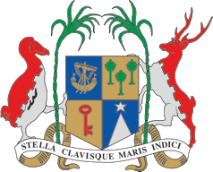

Information about Ministry of Labour, Industrial Relations, Employment and Training (MLIRET)
About Us
The Employment Service of the Employment Division, operating under the aegis of the Ministry of Labour, Industrial Relations, Employment and Training, is governed by the Employment and Training Ordinance 1963 and the Employment and Training Act 1982. It is ISO certified 9001: 2008 since November 2002 and its services are offered at regional level at the 13 Employment Information Centres (EICs) across the island.
Core Objectives
To:
- Facilitate the employment of jobseekers including laid off workers,
- Provide assistance and guidance with regards to employment prospects; and
- Enforce the regulations regarding the operations of agents for the recruitment of Mauritians for employment locally and/or overseas.
- Processing of all vacancies notified to the Employment Service by the various Ministries / Parastatal Bodies and by the International Organisation for Migration (IOM), in line with established procedures.
- Counselling services to jobseekers at the Employment Information Centres.
- Updating of relevant documents, labour market data, training opportunities, business facilitation, amongst others, for the information of jobseekers.
- In line with the Employment Rights Act 2008, the Redeployment Unit facilitates the redeployment of laid-off workers (LOW) registered under the workfare programme, in alternative employment.
- Data collection and dissemination of labour market information
- Publication of monthly bulletins and quarterly reports on labour market.
- Inspections of companies across the island with regard to Work Permit applications, Recruitment Licences and complaints received from various stakeholders.
- 13 EICs across the island
- Registration, placement of jobseekers and job canvassing in respective regions.
Units - Employment Service
|
Registration and Placement Unit
|
|
Information, Communication and Counselling Unit
|
|
Redeployment Unit
|
|
Labour Market Information (LMI) Unit
|
|
Enforcement, Licensing and Monitoring Unit
|
|
Employment Information Centres (EICs)
|